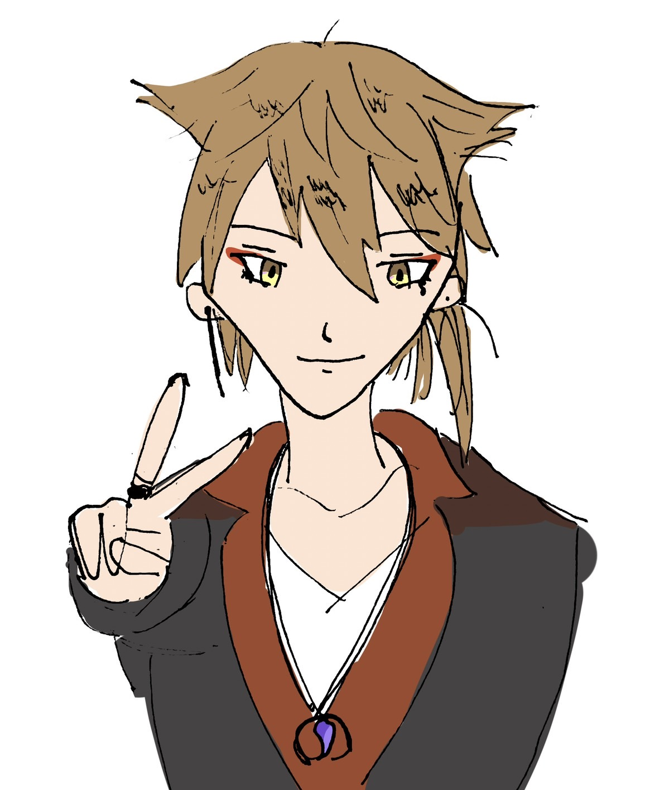

はじめに
このHPは授業の課題で作ったものになります。不自然なところが様々あるかと思いますが大目に見ていただけたら幸いです。
伏見ガクとは、VTuberとして活躍する方で、このHP作成者の推しです。タイトル通り、このHPは彼についてのクイズなので彼についての説明はこのあたりで終わらせておきます。
本当は御本人の画像を載せて顔の良さについて話したいくらいなのですが、著作権等の問題があるため、今回は使用しませんでした。代わりに友人が描いてくれたので、伏見を知らない方は友人の絵でイメージしていただければと思います。
最後に、描いてくれた友人へ。本当にありがとう。この場を借りてお礼申し上げます。
|  | 「ピーッス！どうも伏見ガクっす！サクッとガクって読んでくれよな！」 |
伏見ガクとじゃんけんが出来ます
頑張って勝とう！→ じゃんけんをする